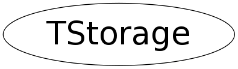

class TStorage
TStorage Storage manager. The storage manager works best in conjunction with the custom ROOT new and delete operators defined in the file NewDelete.cxx (libNew.so). Only when using the custom allocation operators will memory usage statistics be gathered using the TStorage EnterStat(), RemoveStat(), etc. functions. Memory checking is by default enabled (when using libNew.so) and usage statistics is gathered. Using the resource (in .rootrc): Root.MemStat one can toggle statistics gathering on or off. More specifically on can trap the allocation of a block of memory of a certain size. This can be specified using the resource: Root.MemStat.size, using the resource Root.MemStat.cnt one can specify after how many allocations of this size the trap should occur. Set the compile option R__NOSTATS to de-activate all memory checking and statistics gathering in the system.
Function Members (Methods)
public:
| TStorage() | |
| TStorage(const TStorage&) | |
| virtual | ~TStorage() |
| static void | AddToHeap(ULong_t begin, ULong_t end) |
| static void* | Alloc(size_t size) |
| static TClass* | Class() |
| static void | Dealloc(void* ptr) |
| static void | EnableStatistics(int size = -1, int ix = -1) |
| static void | EnterStat(size_t size, void* p) |
| static FreeHookFun_t | GetFreeHook() |
| static void* | GetFreeHookData() |
| static ULong_t | GetHeapBegin() |
| static ULong_t | GetHeapEnd() |
| static size_t | GetMaxBlockSize() |
| static Bool_t | HasCustomNewDelete() |
| virtual TClass* | IsA() const |
| static Bool_t | IsOnHeap(void* p) |
| static void* | ObjectAlloc(size_t size) |
| static void* | ObjectAlloc(size_t size, void* vp) |
| static void | ObjectDealloc(void* vp) |
| static void | ObjectDealloc(void* vp, void* ptr) |
| TStorage& | operator=(const TStorage&) |
| static void | PrintStatistics() |
| static void* | ReAlloc(void* vp, size_t size) |
| static void* | ReAlloc(void* vp, size_t size, size_t oldsize) |
| static char* | ReAllocChar(char* vp, size_t size, size_t oldsize) |
| static Int_t* | ReAllocInt(Int_t* vp, size_t size, size_t oldsize) |
| static void | RemoveStat(void* p) |
| static void | SetCustomNewDelete() |
| static void | SetFreeHook(FreeHookFun_t func, void* data) |
| static void | SetMaxBlockSize(size_t size) |
| static void | SetReAllocHooks(ReAllocFun_t func1, ReAllocCFun_t func2) |
| virtual void | ShowMembers(TMemberInspector& insp) |
| virtual void | Streamer(TBuffer& b) |
| void | StreamerNVirtual(TBuffer& b) |
Data Members
private:
| static FreeHookFun_t | fgFreeHook | function called on free |
| static void* | fgFreeHookData | data used by this function |
| static Bool_t | fgHasCustomNewDelete | true if using ROOT's new/delete |
| static ULong_t | fgHeapBegin | begin address of heap |
| static ULong_t | fgHeapEnd | end address of heap |
| static size_t | fgMaxBlockSize | largest block allocated |
| static ReAllocCFun_t | fgReAllocCHook | custom ReAlloc with length check |
| static ReAllocFun_t | fgReAllocHook | custom ReAlloc |
Class Charts
{kind=link}
{kind=link}
{kind=link}
{kind=link}

Function documentation
void EnterStat(size_t size, void* p)
Register a memory allocation operation. If desired one can trap an allocation of a certain size in case one tries to find a memory leak of that particular size. This function is only called via the ROOT custom new operators.
void RemoveStat(void* p)
Register a memory free operation. This function is only called via the custom ROOT delete operator.
void * ReAlloc(void* vp, size_t size, size_t oldsize)
Reallocate (i.e. resize) block of memory. Checks if current size is equal to oldsize. If not memory was overwritten.
char * ReAllocChar(char* vp, size_t size, size_t oldsize)
Reallocate (i.e. resize) array of chars. Size and oldsize are in number of chars.
Int_t * ReAllocInt(Int_t* vp, size_t size, size_t oldsize)
Reallocate (i.e. resize) array of integers. Size and oldsize are number of integers (not number of bytes).
void * ObjectAlloc(size_t size)
void * ObjectAlloc(size_t size, void* vp)
void ObjectDealloc(void* vp)
void ObjectDealloc(void* vp, void* ptr)
void SetReAllocHooks(ReAllocFun_t func1, ReAllocCFun_t func2)
void EnableStatistics(int size = -1, int ix = -1)
Enable memory usage statistics gathering. Size is the size of the memory block that should be trapped and ix is after how many such allocations the trap should happen.